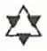
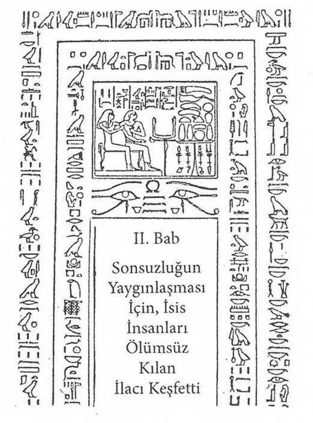
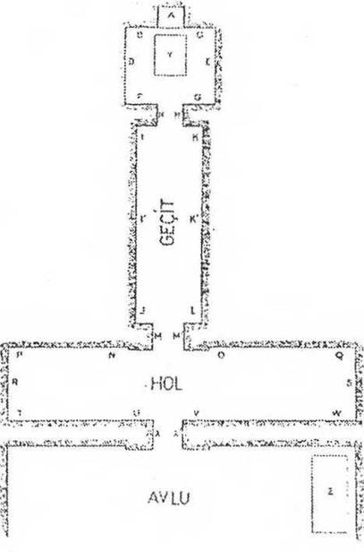
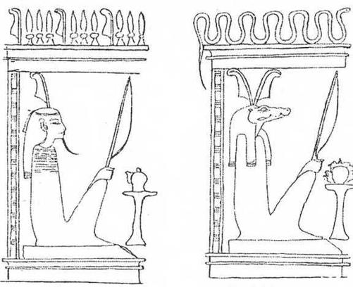

II. BAB

Sonsuzluğun Yaygınlaşması İçin, İsis İnsanları Ölümsüz Kılan İlacı Keşfetti

Toplumsal açıdan çok güçlü din seçkinlerinin bir sürü inisiyasyon merkezinde bilgi aldıkları Nil Vadisi halkı, eski çağların başka halklarından, yalnızca dünyanın en olağanüstü uygarlığına sahip olmakla değil, ölülerine gösterdikleri aşırı ilgiyle de ayrılır Toplumsal, siyasal, dinsel yaşamlarına kesin kurallar egemendir. Bu yaşam, ölüm kapılarının eşiğinde her canlıyı bekleyen ikinci doğumdan sonraki diğer hayata oranla ayarlanmaktadır. Kölpaktchy, Eski Mısırlılar’ın “çok büyük bir lahit gibi” düşündükleri evrenin, öbür dünyanın sırrı ile gerçekten büyülendiklerini söylemektedir. Osiris’in bu evrenin merkezinde olduğuna ve ülkelerinin, gökteki evrenin bir bölümünün yerdeki izdüşümü olduğuna inanıyorlardı.
İnisiyatörleri (öğreticileri) ölümden sonra kozmik ısınmaların ritmine iştirak edeceklerini, ölüm olayının aslında bilinç değişiminin görünüşlerinden sadece biri olduğunu öğretiyorlardı. Bu bilinmeyeni, bu bizdeki görünmezi, herkes mezarındaki yeni doğuşundan sonra daha mükemmel bir hal içinde hissedecekti. Ölüler dünyasını yaşayanlarınkinden çok daha iyi öğrenmiş olan inisiye için, her an uğraştığı öbür dünya, geçici olduğunu bildiği bir varlığın ideali oluyordu. Uygun anda tanrıların iradelerine uyabilecek, yeryüzündeki hayatını saf halde onlara takdim edebilecekti ki bu da, sonuçta, milyonlarca yıllık ebediyeti karşısında çok az bir şeydi. Her durum için bir tane olmak üzere büyü formülleri daha sonraki evrimini kontrol etmekte mastabaların etrafında larvalar* gibi kaynaşan aşağı ruhların kötü etkilerinden onları koruyacaktı. Terazinin sallanışlarını dikkatle izleyen Yiyicinin önünde, o korkunç “ruhun tartılışı” sırasında adalet tanrılarına şaşırmadan cevap verecekti. Hayır, rahiplerin sırları yavaş yavaş açarak sabırla eğittikleri o kişi için ölüm bir son değil, bir başlangıçtı.
*Eski Roma inançlarında katil ve öldürülmüş kişilerin ruhları olup canlıları rahatsız eden bu varlıklara larva deniliyordu
Zaman ve mekan içinde görünen ve görünmeyen birbiri içinde erir. Ölüler Kitabı’nda, ölünün kendinden bahsetmesinin nedenini anlamamıza, belki de bu durum izin vermektedir. Ölü aynı zamanda ihtiyar ve yeni doğmuş, yaratılmamış ve oluşmakta, bitki özsularının karanlık kudreti veya Samanyolu’nun derinliklerinden yayılan uzak kozmik ışımadır... Evet, ölümünden ve dirilişinden sonra, Osiris gibi yaşamın korkunç ve devri şekil ve güçleri içinde sonsuza kadar yeniden doğacaktır...
İnsanın İkinci Doğuşu
Sonsuzluk değişmez ve tektir; galaksilerin hiç durmayan hareketi onun maddeleşmesini sağlar. Sonsuzluğun bütün kapsadığı, bütün olmuş olduğu, bütün olan ve bütün olacağı, titreşim aracılığıyla böyledir. Her şey bütünüyle çifttir. Ölüm bir kriz halinden ibarettir; o sırada “bir isim taşıyan” kişi, ne ölü ne de diridir; o sırada onda var olan sonsuzluk görünür ve kişi bedenini terk eder. Mayassis “öbür dünyadaki dirilmeye hasredilen cenaze merasiminden önce, kokuşmayı uzaklaştırmadan önce, ağız ve gözlerin açılma ayini yapılmadan önce, bu ayin ölüye ilkel Noun’da nefes ve görüş sağlayacaktır; orada ölüm ve doğumun sürekli hareketleri gelişir ve dengelenir. Tıpkı sonsuz küçük düzeyde evrenler oluşturan, madde içinde hareket edip çatışan sayılamaz çokluktaki atom hareketleri gibi. Kuşkusuz sonsuzluğa oranla ölçülemeyecek olan zaman, insanın fizik görünüşünü ve davranışlarını çabucak tahrip eder; ama ruhunu asla bozamaz. Zaman ihtiyarlamaz. Zamanın bir bölümünün değeri, Eski Mısırlıların titreşim diyecekleri saniyelerle veya onların eş değerleriyle, yani milyonlarca yılla hesap edilebilir. Zaman ve ölüm geçici kabuller, düşünce oyunlarını kolaylaştıran anlaşma işaretleridir. Mutlu Nil Vadisinde eskiden yerleşmiş olan halk için, ölümün ne korkunç ne de teorik yanı vardı. Başlangıç ve sonu olmayan bir evrimin bir duraklama zamanını gösteriyor, ölüyü ebedi hayatta doğurtacak gerçek bir doğumun habercisi oluyordu. Onu tutkularından, kalbinde olan pisliklerden temizlenecek bir hale getirecek, vaftize hazırlayacaktı. Çünkü ölü, tanrıların önüne çıkmadan önce Kaz Gölü’nde yıkanmalıydı. Evet, içinde tanrılarla eşit olacağı öbür dünyada görünmek için, ileride inceleyeceğimiz şekillere göre doğrulanmış olacak, saflaşacaktır; ta ki pisliklerinden yıkandıktan sonra ruhu yeniden parıldayana kadar.
Kendilerine güneşin, “yumurtasını gizli varlığında yaratmak için bedenine eklediği” açıklanan inisiyeler için yeryüzünde doğum, öbür dünyadaki ölümün mantıklı bir sonucuydu; nasıl ki yeryüzünde ölüm, öbür dünyadaki doğumun doğal bir işaretinden başka bir şey değilse, bu da kaçınılmaz ve temelde aynı anlamdaydı.
Bunlar Heraklitos’un çok güzel özetlediği fikirlerdir: “İnsanlar ölümlerini yaşar ve yaşamlarını ölürler.” Dolayısıyla bir Mısırlı için, yeryüzü bedeninden sıyrıldıktan sonra sanki Nil kıyısında bulunuyormuşçasına, mekan içinde rahatlıkla hareket edebilmek için bir “ışık bedene bürünmenin, istediği her biçimi almanın, kendi katılım sayesinde sonsuzla eş olmanın, görünüşü olmayan bir ışık ruhun, belleği olmayan bir zamanın ürperişi içinde olmanın o kadar doğal sayılmasının nedeni kolayca anlaşılabilir.

Tipik bir Teb mezarının planı. Adan Z'ye harfler cenaze resimlerinin yerlerini göstermektedir. (Nakht Mezarı, Teb.)
Şüphesiz ki böyle inançlar bizi şaşırtıp kuşkulandırabilir. Çünkü insanın evren ile bu nihai özdeşleşmesinin nasıl olabileceğini bizler anlayamamaktayız. Çünkü Mısırlılar’ın ka dedikleri, tabiatımıza kesinlikle yabancı olan bu elemanın, bu sonsuz “ben” sembolünün, her canlı varlığın doğumundan, adının daha annesi tarafından bile söylenmesinden önce, sonsuzlukta ona kazındığı için
depo ettiği, varlığımızın en derin sırrındaki parlaklığın bizi büyülemesine kendimizi bırakamıyoruz. Esaslı hiç bir şeye dayanmaz göründüğü için bu kadar soyut yollara sapmaya tereddüt ediyorsak, bundan kendimizdeki görünmez olanı, evrim veya tahrip süreci aklımıza veya duygumuza kaydolmaksızın süregiden veya sapan şeyi tanımadığımız da anlaşılabilir.
Bununla birlikte, görünmez varlığımız bir gerçektir. Cevheri bozulmaz ve ölümsüz olan odur. Bu görünmez varlığı, bizim bu suretimizi, Mısırlılar geçmiş ve gelecek zamanların her ölümü için bir tane olmak üzere, sonsuza dek yaşatacaklardır. “Bitmez tükenmez bir yaşam gücünün taşıyıcı ve dağıtıcısı olan güneş” nasıl her sabah yeniden doğarsa, her ölü de yeniden dirilecektir.
Ölüler, Rüzgarla Yükselir (Torino Papirüsü)
Özetleyelim. Eski Mısırlılar için ölüm diye bir şey yoktu. Her biri, toprağın öbür yüzünde kendine dünyadakine oldukça benzer bir yer ve bir varlık bulacağına güvenebiliyordu. Gezegenler arasında, kendini doğruya çıkardıktan sonra, maddi zenginliklerinin hiçbirini terk etmeksizin, vaad edilen sonsuzlukta mutlu olabilirdi. İşte burada, firavunun halkının ölülere gösterdikleri özenin, sandığımız gibi o kadar menfaatsiz olmadığı ortaya çıkıyor. O kadar çabuk unutan ve etkilenebilen canlıların, ölülerin hakları olan maddi ve manevi özenle memnun edilmedikleri zaman, onların dönüşlerini ve kızgınlıklarını düşündüklerini söylemek gerekir. Ölünün akraba ve yakın dostları, onun kendine yapılması gerekeni isteyeceğini, eğer bunlar yapılmamış veya kötü yapılmışsa, yaşayanların evlerine taciz etmek için gelebileceğini bilirler. Buna ne Teb esnafının sattığı muskalar, ne rahiplerin duaları, ne de bu biçim yazılarda uzmanlaşmış katiplerin yazıları engel olabilmektedir.
Torino Papirüsü, “rüzgarla taşman” bu ölülerin yapabilecekleri kötülüklere değinmektedir. Metin, ölülerle yakınları arasındaki hasis pazarlıklardan söz eder. Dullar ve yetimler ölmüş koca ve babalarına artık kötülük yapmaması ve kendilerini içinde bıraktığı sefaleti arttırmaması için yalvarırlar.
Kendisi görevle evden uzakta iken, ona bakacak bir hekim bulmasına karşın karısı ölen Memphisli bir memurun olayı anlatılır: Yasını tutarken o kadar büyük bir acı duyar ki üç yıl boyunca tüm neşesini kaybeder ve o kadar uzun zaman kederinin sürmesi onu öyle sıkar ki ölü kadını neşesini yeniden bulmasına engel olmakla suçlar. Bunun üzerine aşağıdaki mektubu yazıp, onun mezarının üzerine bırakır:
“Kusursuz ruhlu Ankhiri! Sana ne kötülük ettim ki bu kadar zavallı bir hale düştüm? Niçin beni ezmeye çalışıyorsun? Ben senin sadık kocan değil miyim? Gençken seni aldığım zamandan beri ekmeğini, elbiselerini, kokularını sana ben verdim. Seni hiç hor görmedim; yabancı bir kadının evine hiç girmedim. Öldüğün zaman adamlarımla birlikte ağladım, sana ince ketenden elbiseler giydirdim. Ve Douat dünyasında olduğun üç yıldır bana eziyet ediyor ve eski neşeme kavuşmama engel oluyorsun. Kalbimi sevinmekten alıkoyarsan, seni adalet karşısında suçlamak üzere dava mı açmalıyım?”
Bütün bu görüşler, inisiyasyondan geçenlerin öğrendiklerine uymamaktadır. Sıradan maddi menfaatlerin ve huzurun korunması, hiç kimsenin ruhunun yazgısıyla ilgilenmesine engel olmamıştır.
542 İlah ve III. Thoutmes’in Mezarındaki
Ölüm Melekleri
Eski Mısırlılar, ölüm sırlarından hiçbir endişeye kapılmaksızın söz ediyorlardı. Bununla birlikte Douat’ın kapılarında onları bekleyen canavar yüzlü tanrılar, bir hayli korkunçtu. III. Thoutmes’in mezarında görülebileceği gibi, beş yüz kırk iki tanrı ve zebaninin egemen olduğu korkunç bir evrenin derinliklerinde her hayatın açılıp geliştiğini biliyorlardı. Dört bin yıllık papirüsten, "mezarında uzanmış olacağın o günü düşün,” diye okunabilir. “Bir akşam, sedir yağı ve tanrıça tarafından örülmüş bantlarla kutsanacaksın. Gömülme gününde güzel ağlayıcı kadınlar cenaze alayının önünden gidecekler ve başlarına Batı vadisinin ince kumlarını serpecekler. Mumyan altından olacak. Öküzlerin çektiği ölü arabasında giderken, tabutunun tavanı gökyüzü gibi üzerinde olacak. Mezarının kapısında kutsal danslar yapılacak ve rahipler kalbini sevindirecek sözler söyleyecekler.”
Teb Nekropollerinin Evreni
Mısırlılar, ayaklarının altında gerçekten çok tuhaf bir evren olduğunu hayal ediyorlardı. Bu evren, görünüşleri varlıklarından ya da güçlerinden daha endişe verici olan tanrılarla ve kötülüğü sonsuz şekilleriyle simgeleyen kötülük yapıcı ruhlarla doluydu. Her mezar kapısının arkasında Douat’ın akla gelmez karanlıklarının eşiğinde, Teb nekropollerinin uzun koridorlarını bir defa olsun görmek, gerçekten tedirginlik duymak için yeterlidir. Ölü ruhları, bütün vaadlere, bütün yapay gösterişlere karşın, acımasız ve sıcaklıktan yoksun bir dünyada ümitsizce yalnız değiller midir? Bu yerlerden böyle bir anı mı saklanacak? Hiçbir şeyin adlandıramayacağı bir hiçlik içinde kaybolmak duygusu hissedilmezse, gerçekten orada, kendi etrafımızda zaman ve mekanın kaydığını milyonlarca yıl duyacak mıyız? Krallar Vadisinin ölü saraylarının salon ve koridorlarını gezdim. Tanrılar ve işaretlerle dolu gecenin derinliklerinden çıkıp, ayakta duramayacak kadar sarhoş biri gibi. Mısır göklerinin açıklığına kavuştuğumda, dinlenişlerini bozmaya cüret etliğim ruhların büyüsünden kendimi kurtaramadım. Eski Mısırlılar’ın bu ölüler dünyasında gördüklerimi unutamam: Suçlayıcı tanrıların garip görüntüleri; tılsımlarla örtülü o firavun mumyalan; tersine bir evrende başıboş dolaşan kafası kesilmiş o Osiris düşmanları; karanlıklarda değişen belirsiz görünüşlü o şekiller. Biban el Molouk nekropollerinde, canlı ışık dünyasını bıraktıktan sonra, binlerce yıllık unutulmuşluk veya ilgisizlikten sonra, Teb nekropollerinin dehşet verici sessizliğinin ne olabileceğini anladım. Piramitlerin yedi yüz metninde açıklanan ölüm cennetine doğru alt dünyanın oniki bölgesinden iniş boyunca süren o ezici dehşeti hissettim. Çünkü sonsuz gecelerin hareketsizlik ve eziciliğinde, kararsız ve dayanılmaz bir şey var... Hayır, açtığım bir kapının ardında kaynaştığını gördüğüm “ışık düşmanı” canavarları, sonra başka bir kapının ardında, yeni dirilişler bekleyen kendini temize çıkarmışları hiç unutmayacağım.
Kendilerine atmaca başlı tanrılar tarafından milyonlarca yıllık bir süre tanınmış firavunlar, incecik bacakları arasında koca güneşleri yuvarlayan bokböcekleri... Yıldızlı tavanı ve astronomik tablolarıyla, bir coğrafya kitabının resimleri gibi, mezar ötesi bölgelerde, ruh ve madde uzayın soğukluğunda kaybolana kadar seçilmişlerce işlenecek İalou tarlalarını tasvir eden büyük freskleriyle, “Altın Salonlar”ı seyrettim.
Anlamına akıl erdiremeden Ra'nın yetmiş beş şeklini; ölüler tarafından, uzun bir yılandan başka bir şey olmayan bir halatla çekilen güneş kayığının üzerinde yüzdüğü Douat denen o kutsal nehri gördüm. Diriliş şifasından kazandıkları sonsuzluğu ne yapacaklarını bilemeyen ölüler; büyü formülleri arayan, öbür dünya rahiplerinin küçük adak ekmekleri ve çok tatlı bira ile besledikleri kuşruhlar; mumya biçiminde Osirisler; cehennemin en gizli bölümlerinde resmedilmiş takım yıldızlar; annelerinin karnındayken aldıkları ka’dan mahrum, ışık varlığı olmayan cehennemlikler; lahitlerin dört köşesinde, dipte yatan mumyayı korumak istermiş gibi kanatlarını yaymış tanrıçalar gördüm...
Şunu iyi dinleyin: Vadi Engereğinin ağzından giren ve kuyruğundan skarabe olarak çıkan, Ptaah gibi pullu ölüler gördüm. “Altın Salonlara giden aydınlık koridorlar boyunca tanrıçaların acayip yüzlerini şöyle böyle tanıyabiliyordum; aralarından bazılarının timsah gibi kaygan karınları vardı. Ve sonra bu korkunç salonda ruhun tartılma sahnesinde, korkunç terazinin kefelerinin sallandığını görür gibi oldum. Sanki bakışım veya nefesimde bir kirlilik varmış gibi, sanki kraliçe Nefertitiyi mezarına götüren İsis’inki gibi yeşilimsi olmayan tenim bir şeytan teniymiş gibi... Şanssız ölülerin kalbinin, adalet tanrılarının yargılarını dikkatle izleyen Büyük Yiyicinin açık ağzına düştüğünü gördüm.
Neredeyse aklımı oynatacaktım. Her yerde etrafımda kokmuş çakal kulaklı Anubis’i, boğa başlı Mentou’yu, ucu bir arı iğnesi gibi sivrilerek biten iblis başlı Thot’u görüyordum. Bir yuvarlaklı haç yağmuru altındaydım. Yavaş yavaş kendimi ölüler ve hakimler kalabalığı ile karıştırıyordum. Douat’ın bu karabasanlı görüntülerinin her tarafta uçuştuğunu görüyordum. Ben ki başka bir devirden, çok uzak bir geçmişin sırlarına nüfuz etmek ve Teb nekropollerinin bu esrarlı kalabalığında gerçeklerin ne olabileceğini araştırmak için gelmiştim. Bütün duvarlara resmedilmiş ruhların tartılıp yargılandığı bir halüsinasyonu andıran sahneden kendimi ayıramıyordum: Çünkü her yerde, hakimlerin ve ölülerin kaynaştığım görüyor, ölülerin son haykırışlarının büyük bir velvele ile yükseldiğini, olumsuz itirafların ümitsiz şarkısını duyuyordum.

Bıçaklarla silahlanmış Douat Kapılarının Koruyucuları. (British Museum’daki Anhai Papirüsü. CXLVI.)